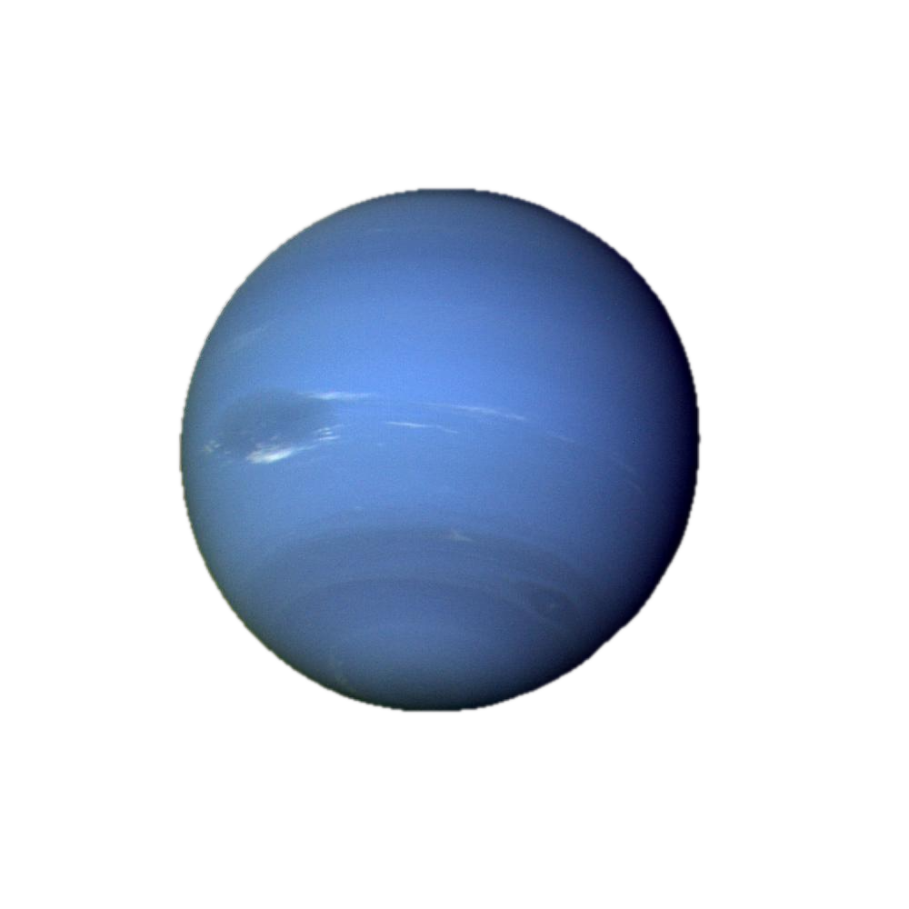
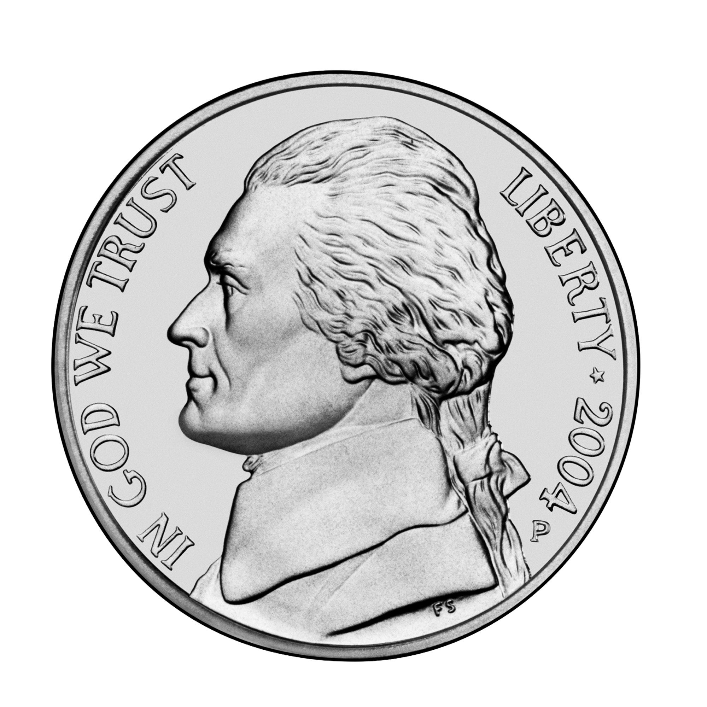
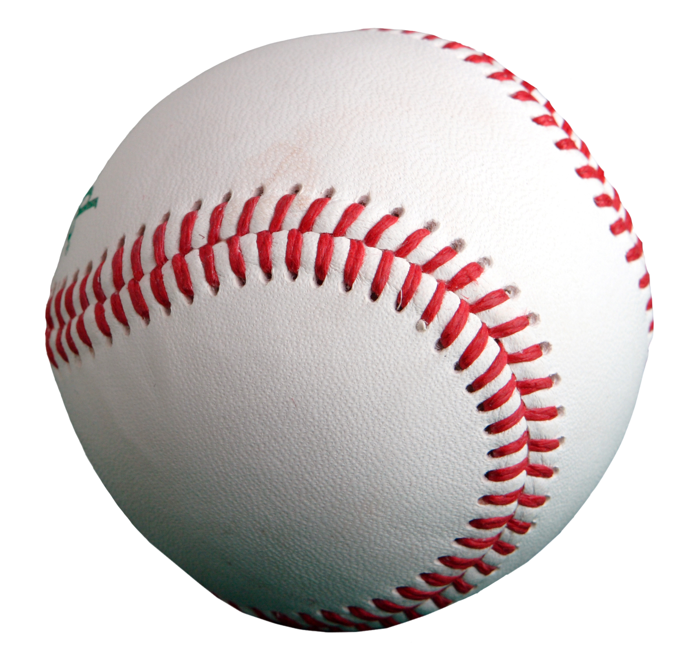

The mysterious ice planet is about 4 times bigger than Earth and can hold about 57 to 58 Earths inside it!

One day takes about 16 hours and a complete orbit around the Sun is 165 Earth years!
Neptune does not have a solid surface. Mostly 80% or more of the planet's mass is made up of a hot dense fluid of "icy" materials compose of water, methane, and ammonia.
Neptune has 16 known moons.
Dark, cold, and whipped by supersonic winds, ice giant Neptune is more than 30 times as far from the Sun as Earth. Sfar away that high noon looks like dim twilight.

Earth (Nickel)

Neptune (baseball)
Neptune is the only planet in our solar system not visible to the naked eye. It's the most distant planet in our solar system.
You have successfully navigated 30 times further from the Sun than Earth!
CLICK HERE TO COMPLETE MISSION